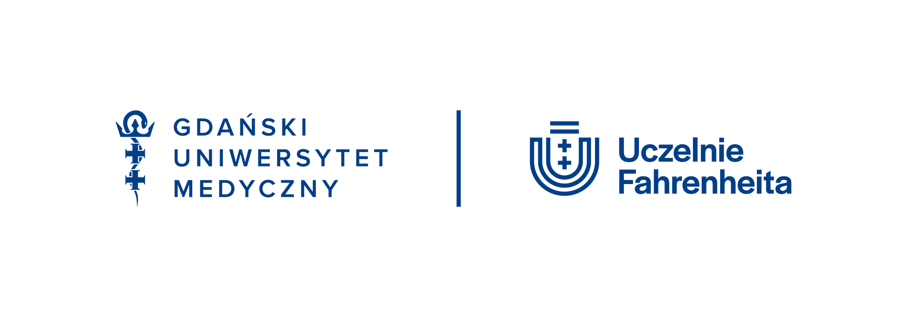

OSF · Scoping review
Conceptual framework
A review of the evidence and development of a framework explaining how growth, tissue capacity, and athletic load may contribute to apophyseal changes.
OSF.IO/A9ECQ ↗A multidomain research program combining biomarkers, ultrasound imaging, functional testing, and clinical trials to advance evidence-based care for Osgood–Schlatter disease and Sever disease.
Lower-extremity apophyseal pathologies — Osgood–Schlatter disease and Sever disease — are among the most prevalent musculoskeletal conditions in youth athletes, yet they remain poorly understood and undertreated.
Current clinical practice frequently defaults to a "wait and see" approach, despite growing evidence that these conditions are not trivially self-limiting. Recent data show that adults with a history of Osgood–Schlatter disease have significantly worse knee health and a higher risk of developing patellar tendinopathy (Krommes et al., 2025). Meanwhile, 25% of practitioners still recommend watchful waiting as the primary strategy (Lyng et al., 2020).
No high-quality randomized controlled trial of conservative treatment currently exists for this population. The LEAP project aims to close that gap.
Read the full scientific rationale →Cartilage turnover, bone turnover, and inflammatory markers (CRP, vitamin D, IL-family) to characterize the biological landscape of apophyseal pathology.
Structural assessment of the apophysis at baseline and post-intervention to track morphological changes alongside clinical outcomes.
Validated performance-based and patient-reported outcomes (KOOS-Child, OxAFQ-C, NPRS) alongside biomechanical assessment.
Rigorous randomized and prospective designs — from a double-blind sham-controlled LLLT pilot RCT to an individualized rehabilitation feasibility study.
The LEAP programme combines phenotyping, a pilot laser/sham trial, individualized rehabilitation, and long-term follow-up. Each project has a distinct role and a separate public registration.
Multidomain phenotyping of lower-extremity apophyseal pain in youth athletes
We compare biomarker profiles, ultrasound findings, clinical presentation, and functional performance between youth athletes with Osgood–Schlatter or Sever-related changes and healthy peers. The aim is to build a more complete picture of lower-extremity apophyseal pain than any single test can provide.
Pilot randomized study of low-level laser therapy versus sham
We are testing the feasibility and preliminary effects of photobiomodulation in youth athletes with Osgood–Schlatter or Sever-related pain. Participants are randomly assigned to active low-level laser therapy or a sham procedure.
Individualized 12-week rehabilitation for youth athletes
We evaluate the feasibility of a 12-week rehabilitation pathway tailored to symptoms, load tolerance, and the needs of each young athlete. The programme supports gradual progression rather than relying on a fixed timeline.
Recovery and return to sport: a prospective 12-month cohort study
We follow youth athletes for 12 months to understand how symptoms change, when they return to sport, and how different definitions of recovery compare after Osgood–Schlatter or Sever-related pain.
A review of the evidence and development of a framework explaining how growth, tissue capacity, and athletic load may contribute to apophyseal changes.
OSF.IO/A9ECQ ↗Experiences of young people, parents, and practitioners, together with Polish adaptation and evaluation of pediatric knee and ankle–foot questionnaires.
OSF.IO/KESA7 ↗Assessment of agreement between researchers performing standardized clinical pain-provocation tests and local swelling assessment.
OSF.IO/MXDRB ↗Principal Investigator
Department of Immunobiology and Environmental Microbiology
Medical University of Gdańsk
Project Supervisor
Department of Immunobiology and Environmental Microbiology
Medical University of Gdańsk
Ultrasonography
2nd Division of Radiology, Faculty of Health Sciences
Medical University of Gdańsk
Biochemical Research
Department of Immunobiology and Environmental Microbiology
Medical University of Gdańsk
Orthopaedic Surgery
Department of Orthopaedics
Uniwersyteckie Centrum Kliniczne, Gdańsk
Orthopaedic Surgery
Department of Orthopaedics
Uniwersyteckie Centrum Kliniczne, Gdańsk
PhD Candidate
Katedra Nadciśnienia Tętniczego i Diabetologii
Medical University of Gdańsk

Medical University of Gdańsk · Fahrenheit UniversitiesThe core studies and supporting research within the LEAP programme are registered publicly in ClinicalTrials.gov or OSF. The registry record is the authoritative source for the current protocol and study status.
Low-level laser therapy versus sham in youth athletes with Osgood–Schlatter or Sever-related pain.
NCT07446517 ↗Individualized 12-week rehabilitation for youth athletes with Osgood–Schlatter, Sever-related, or Sinding–Larsen–Johansson-related pain.
NCT07521280 ↗Biomarkers, ultrasound, clinical presentation, and functional testing in youth athletes.
OSF.IO/R9KW6 ↗Twelve-month follow-up of recovery and return to sport.
OSF.IO/AF3QV ↗Evidence synthesis and a theory-informed framework for apophyseal changes in youth sport.
OSF.IO/A9ECQ ↗Experiences of patients, parents, and practitioners, and Polish adaptation of pediatric PROMs.
OSF.IO/KESA7 ↗Inter-rater reliability of standardized clinical tests and local swelling assessment.
OSF.IO/MXDRB ↗Both studies have received ethics approval from the Bioethics Committee for Scientific Research, Medical University of Gdańsk.